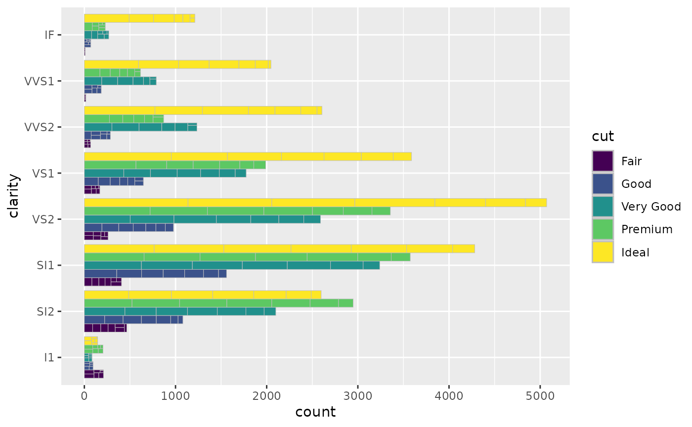

Subgroup Text Labels for Treemap Bar Charts
Source:R/GeomTreecolSubgroupText.R, R/geom_treebar_subgroup_text.R
geom_treebar_subgroup_text.RdAdd text labels to subgroups of a treemap bar chart generated by
geom_treebar() or geom_treecol().
Usage
geom_treebar_subgroup_text(
mapping = NULL,
data = NULL,
stat = "count",
position = "stack",
na.rm = FALSE,
show.legend = FALSE,
inherit.aes = TRUE,
padding.x = grid::unit(1, "mm"),
padding.y = grid::unit(1, "mm"),
place = "bottom",
min.size = 4,
grow = FALSE,
reflow = FALSE,
fixed = NULL,
layout = "squarified",
start = "bottomleft",
level = "subgroup",
...
)
geom_treecol_subgroup_text(
mapping = NULL,
data = NULL,
stat = "identity",
position = "stack",
na.rm = FALSE,
show.legend = FALSE,
inherit.aes = TRUE,
padding.x = grid::unit(1, "mm"),
padding.y = grid::unit(1, "mm"),
place = "bottom",
min.size = 4,
grow = FALSE,
reflow = FALSE,
fixed = NULL,
layout = "squarified",
start = "bottomleft",
level = "subgroup",
...
)
geom_treebar_subgroup2_text(...)
geom_treecol_subgroup2_text(...)
geom_treebar_subgroup3_text(...)
geom_treecol_subgroup3_text(...)Arguments
- mapping
Set of aesthetic mappings created by
aes(). If specified andinherit.aes = TRUE(the default), it is combined with the default mapping at the top level of the plot. You must supplymappingif there is no plot mapping.- data
The data to be displayed in this layer. There are three options:
If
NULL, the default, the data is inherited from the plot data as specified in the call toggplot().A
data.frame, or other object, will override the plot data. All objects will be fortified to produce a data frame. Seefortify()for which variables will be created.A
functionwill be called with a single argument, the plot data. The return value must be adata.frame, and will be used as the layer data. Afunctioncan be created from aformula(e.g.~ head(.x, 10)).- stat
Override the default connection between
geom_treebar()andstat_count().- position
A position adjustment to use on the data for this layer. This can be used in various ways, including to prevent overplotting and improving the display. The
positionargument accepts the following:The result of calling a position function, such as
position_jitter(). This method allows for passing extra arguments to the position.A string naming the position adjustment. To give the position as a string, strip the function name of the
position_prefix. For example, to useposition_jitter(), give the position as"jitter".For more information and other ways to specify the position, see the layer position documentation.
- na.rm
If
FALSE, the default, missing values are removed with a warning. IfTRUE, missing values are silently removed.- show.legend
logical. Should this layer be included in the legends?
NA, the default, includes if any aesthetics are mapped.FALSEnever includes, andTRUEalways includes. It can also be a named logical vector to finely select the aesthetics to display.- inherit.aes
If
FALSE, overrides the default aesthetics, rather than combining with them. This is most useful for helper functions that define both data and aesthetics and shouldn't inherit behaviour from the default plot specification, e.g.borders().- padding.x, padding.y
grid::unit()object, giving horizontal or vertical padding between text and edge of tile. Defaults to 1 mm.- place
Where inside the box to place the text. Default is
bottom; other options aretopleft,top,topright, etc.- min.size
Minimum font size, in points. If provided, text that would need to be shrunk below this size to fit the box will not be drawn. Defaults to 4 pt.
- grow
If
TRUE, text will be grown as well as shrunk to fill the box.- reflow
If
TRUE, text will be reflowed (wrapped) to better fit the box.- fixed
Deprecated. Use
layout = "fixed"instead. Will be removed in later versions.- layout
The layout algorithm, one of either 'squarified' (the default), 'scol', 'srow' or 'fixed'. See Details for full details on the different layout algorithms.
- start
The corner in which to start placing the tiles. One of 'bottomleft' (the default), 'topleft', 'topright' or 'bottomright'.
- level
One of 'subgroup', 'subgroup2' or 'subgroup3', giving the subgrouping level for which to draw text labels. It is recommended to use the aliases
geom_treemap_subgroup2_text()andgeom_treemap_subgroup3_text()instead of this argument.- ...
Other arguments passed on to
layer()'sparamsargument. These arguments broadly fall into one of 4 categories below. Notably, further arguments to thepositionargument, or aesthetics that are required can not be passed through.... Unknown arguments that are not part of the 4 categories below are ignored.Static aesthetics that are not mapped to a scale, but are at a fixed value and apply to the layer as a whole. For example,
colour = "red"orlinewidth = 3. The geom's documentation has an Aesthetics section that lists the available options. The 'required' aesthetics cannot be passed on to theparams. Please note that while passing unmapped aesthetics as vectors is technically possible, the order and required length is not guaranteed to be parallel to the input data.When constructing a layer using a
stat_*()function, the...argument can be used to pass on parameters to thegeompart of the layer. An example of this isstat_density(geom = "area", outline.type = "both"). The geom's documentation lists which parameters it can accept.Inversely, when constructing a layer using a
geom_*()function, the...argument can be used to pass on parameters to thestatpart of the layer. An example of this isgeom_area(stat = "density", adjust = 0.5). The stat's documentation lists which parameters it can accept.The
key_glyphargument oflayer()may also be passed on through.... This can be one of the functions described as key glyphs, to change the display of the layer in the legend.
Details
These functions take the same aesthetic mappings as geom_treebar() and
geom_treecol(), and are to be used in conjunction with them, ensuring that
arguments like position match where supplied.
Examples
library(ggplot2)
ggplot(diamonds, aes(y = clarity, fill = cut, subgroup = color)) +
geom_treebar(position = "dodge") +
geom_treebar_subgroup_text(position = "dodge")
